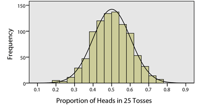

Lesson 16: Describing Categorical Data: Proportions; Sampling Distribution of a Sample Proportion
Case Study: Eating Habits of College Students


Chances are that as a college student you have probably thought to yourself, “It takes too much time to prepare healthy food.” In fact, the American College Health Association estimates that only 6% of college students across the U.S. are eating the recommended “five or more servings of fruits and vegetables” daily.1 In an effort to better understand the barriers that were keeping college students from eating healthy, a team of researchers from the Department of Psychology at BYU-Idaho undertook a study.2

The team of researchers obtained a convenience sample of \(n=517\) college students from General Psychology courses over three different semesters. Click to Show/Hide More Sampling Details
The survey contained many questions for the students to answer and found some fantastic conclusions about what keeps students from eating healthy. (If you are interested, click here to read an news article highlighting their findings.) For simplicity, we will look at only a couple of questions this study asked.
One particularly interesting question asked students about the barriers they faced to eating a healthy diet. (A healthy diet was stated to be a diet that included fresh fruits and vegetables.) Students were allowed to select as many of the following answers as they felt applicable in response to this question.
- It is too expensive to purchase fruits and vegetables
- It takes too much time to prepare healthy food (e.g., fruits and vegetables)
- There are not enough options for healthy eating here
- I am uncomfortable with healthy eating because it is something I am not familiar with
- It is confusing to know what is considered “healthy eating” anymore
- I prefer tasty, quick options such as fast food
- I do not see positive results when I eat healthy (e.g., I am not full, I do not lose weight)
- Other, please specify.
Another question asked to each student was whether or not the student ate fresh fruits and vegetables as part of their daily diet. They were allowed to answer with either of
- Yes
- No

Numerical and Graphical Summaries of Categorical Data
To describe categorical data, we need a different approach than what we used for quantitative data. Instead of discussing means (like \(\mu\) or \(\bar{x}\)) we will work with proportions. A proportion is a number between 0 and 1 that measures the size of a portion of something to the whole. In the current eating habits study, the researchers are interested in knowing the proportion of students who experience barriers to healthy eating. This proportion probably isn’t 0 (which would imply no students experience barriers to healthy eating) and probably isn’t 1 (which would imply all students experience barriers to healthy eating) but is likely somewhere in between.
Proportions: A number between 0 and 1 that measures the size of a part to the whole.
The sample proportion is a sample statistic. It is written as \(\hat{p}\). It is computed by taking the number of “successes” in the data, called \(x\), and dividing by the total number of individuals in the sample, \(n\) (the sample size).
\[ \text{Sample Proportion:} \quad \hat{p} = \frac{x}{n} \]
The theoretical true proportion for a population is written as just \(p\). It is a population parameter. To compute the true proportion we must know the total size of the population (or total possible outcomes) \(N\), as well as the number of possible successes \(X\). We rarely know \(p\). But we can usually hypothesize a reasonable value for \(p\) using a null hypothesis.
\[ \text{True Proportion:} \quad p = \frac{X}{N} \]
Let’s take a quick glance at the data for one of the questions from the eating habits study.
| Student | Do you regularly eat fresh fruits and vegetables? |
|---|---|
| 1 | (No Answer) |
| 2 | (No Answer) |
| 3 | (No Answer) |
| 4 | Yes |
| 5 | No |
| 6 | No |
| \(\vdots\) | \(\vdots\) |
| 515 | Yes |
| 516 | No |
| 517 | No |
Notice that in this data, some students chose not to answer this question, i.e., “No Answer”. Other students answered “Yes” and other students answered “No”. Our first step to computing the proportion of students who answered “Yes” (what we will call successes in this case) is to count up two numbers.
- First, we count how many students said “Yes”. This turns out to give \(x = 245\).
- Second, we count how many students answered the question. This gives our sample size as \(n = 399\).
- Third, we divide to get
\[ \hat{p} = \frac{245}{399} \approx 0.614 \]
R-Instructions for Computing Sample Proportions
To compute the sample proportion in R:
- Use the
table(...)function to count up how many times certain observations occur in a dataset. - Use the
/symbol to divide \(x\) by \(n\).
To practice, start by reading in the EatingHealthy.xlsx data file into RStudio. (For a reminder on how to read in data, click here
Next, note that the “Yes” and “No” answers to the question “Do you regularly eat fresh fruits and vegetables?” is stored in the column of the dataset called Eathealthy. So we use the table( function, followed by the name of the dataset EatingHealthy followed by a $ sign, followed by the column name Eathealthy.
#Count up the "Yes" and "No" answers:
table(EatingHealthy$Eathealthy)
NA No Yes
118 154 245 From this we learn that there are 118 people who did not answer this question (the “NA” means the answer is “Not Available”), 154 people answered “No”, and 245 people answered “Yes”. Considering only those that answered this question we have a total of \(n=399\) people that answered:
#Get the sample size:
154 + 245[1] 399Dividing the number of “Yes” answers (\(x=245\)) by the total number of answers (\(n=399\)) gives the proportion of students in our sample claiming to eat a healthy diet, \(\hat{p} = 0.614\) or 61.4%.
#Compute the sample proportion:
245/399[1] 0.6140351Bar Charts
Bar charts are a popular way to display categorical data. They provide a bar for each category in the data, and the height of the bar shows many observations from the sample landed that particular category.
We can represent the answers of the \(n=399\) students concering whether or not they “regularly eat fresh fruits and vegetables” with a bar chart.
R Instructions for Bar Charts
To make a bar chart in R:
- First, read in the data: EatingHealthy.
- Second, use the
table(...)function, the assignment operator<-, and a name for the table of counts that you create (likemytable) to save a table of counts.
#Save your table of counts:
mytable <- table(EatingHealthy$Eathealthy)
mytable
NA No Yes
118 154 245 Sometimes you might not have kept track of the actual dataset, but you might still know the counts already. In that case, manually type the counts into R using the combine function c(...):
mytable <- c(`NA` = 118, `No` = 154, `Yes` = 245)Note how the above code puts a label in front of each number. That will make it so the bar chart prints those labels underneath of each bar.
- Use the
barplot(...)function on your table of counts to create a bar chart of the values.
#Create a plot of the counts in mytable:
barplot(mytable)
- Specify colors for the bar chart using either
col="skyblue"to give all bars the same color, or usecol=c("orange","firebrick","skyblue")to give each bar a different color. Of course, use any color names you like. - Specify axes labeling with
main="A main title",xlab="An x-axis label", andylab="A y-axis label".
#Make a fancier graph using the options:
barplot(mytable,
col=c("orange","firebrick","skyblue"),
main="College Students were Asked \n \"Do you regularly eat fresh fruits and vegetables?\"",
xlab="Student Answers",
ylab="Number of Students")

To learn how to Make Inference (Step 4 of the Statistical Process) about the true population proportion \(p\), we first need to explore the sampling distribution of the sample proportion. You may recall studying the sampling distribution of the sample mean in Lesson 6. Using those ideas along with the z-score equation of Lesson 7, we were able to use the sample mean, \(\bar{x}\), to make inference about the population mean, \(\mu\). Now we will study how to use the sample proportion, \(\hat{p}\), to make inference about the population proportion, \(p\), by studying the sampling distribution of the sample proportion.
Sampling Distribution of the Sample Proportion
Example: Tossing a Coin
Answer the following questions. For this exercise, you will need a coin.
- Toss a coin \(n=25\) times. Keep track of the proportion of heads you observe. Please complete this before continuing.
- The data file CoinTossHeads.xlsx contains data representing a collection of 900 students’ results, where each tossed a coin \(n=25\) times and calculated the proportion of heads. The following histogram illustrates these data. How would you describe the shape of the distribution of the observed proportions?

- Find the spot on the horizontal axis of the histogram indicating the proportion of heads (\(\widehat{p}\)) that you observed in Question 1. Based on your visual observation, would you say your proportion of heads is unusual?
- Visually, estimate the mean and standard deviation of the observed sample proportions. Please write your answer to this question before continuing.
- The proportion of heads that you will observe in \(n=25\) tosses of a fair coin, \(\widehat p\), is a random variable. The true theoretical mean for this random variable is \(p=0.5\). Explain why this value would make sense.
- The true theoretical standard deviation of \(\widehat p\) in this case is \(\sigma_{\widehat{p}} = 0.1\). This can be obtained using the formula
\[ \displaystyle{\text{Standard deviation of}~\widehat{p} = \sigma_{\widehat{p}} = \sqrt{ \frac{p(1-p)}{n} } } \] where \(p\) is the true population proportion, which is also the mean of the distribution of \(\widehat{p}\).
- Remember that the \(z\)-score for an observed data value can be computed as:
- Use the mean and standard deviation given in question 6, to find the \(z\)-score corresponding to your sample proportion.
- Based on the \(z\)-score you computed in question 7, is your observed proportion considered unusual?
Central Limit Theorem for the Sample Proportion
If the sample size is large, the sample proportion, \(\widehat p\), will be approximately normally distributed. This is a direct consequence of the Central Limit Theorem.
How Large is Large Enough?
We can apply the Central Limit Theorem to a sample proportion (and conclude that \(\widehat p\) follows a normal distribution) if both of the following conditions are satisfied:
- \(np \ge 10\)
- \(n(1-p) \ge 10\)
It is important to check both conditions. If one of them is not satisfied, we cannot conclude that \(\widehat p\) follows a normal distribution. Observe that the effect of these two conditions is that if \(p\) is very close to 0 or 1, then \(\widehat{p}\) isn’t close to normal unless \(n\) is very large.
Mean and Standard Deviation
The sample proportion, \(\widehat p\), is normally distributed if \(n\) is large. The true population mean of the random variable \(\widehat p\) is: \[ \underbrace{\mu_\widehat{p}}_{\textrm{Mean of}~\widehat{p}} = p \] and the true population standard deviation is: \[ \underbrace{\sigma_\widehat{p}}_{\textrm{Standard Deviation of}~\widehat p} = \sqrt{\frac{p \cdot (1-p)}{n}} \]
Answer the following questions. Consider exercise 1, in which you tossed a coin \(n=25\) times and recorded the proportion of heads.
- What is the true proportion of heads that would be expected to occur if a coin was tossed many, many times? (This is the mean, \(p\).)
- Use the equation for the standard deviation (given above) to verify that the true population standard deviation for the proportion of heads that will occur when a coin is tossed \(n=25\) times is 0.1.
Probability Calculations for a Sample Proportion
If the sample size is sufficiently large, we can use the Normal Probability Applet to make probability calculations for proportions, just as we did for means. First, we need to find the \(z\)-score. This can be done with the equation:
\[ z = \frac{\textrm{value} - \textrm{mean}}{\textrm{standard deviation}} = \frac{\widehat p - p}{\sqrt{\frac{p \cdot (1-p)}{n}}} \]
Then, we can enter this \(z\)-score in the Normal Probability Applet to find the area more extreme than the \(z\)-score.
Worked Example
If a coin is tossed \(n=25\) times, and heads is observed 17 times, the sample proportion of heads is \(\displaystyle{\widehat p = \frac{x}{n} = \frac{17}{25} = 0.68}\) The proportion of heads tossed by the first student in the file CoinTossHeads.xlsx is \(\widehat p = 0.68\). We will find the probability that a sample proportion will exceed 0.68.
First, we compute the \(z\)-score corresponding to \(\widehat p = 0.68\). We can use the mean and standard deviation, which were given in questions 9 and 10, or simply substitute the values of \(p=0.5\) and \(n=25\) in the equation for the \(z\)-score.
\[ z = \frac{\textrm{value} - \textrm{mean}}{\textrm{standard deviation}} = \frac{\widehat p - p}{\sqrt{\frac{p \cdot (1-p)}{n}}} = \frac{0.68 - 0.5}{\sqrt{\frac{0.5 (1-0.5)}{25}}} = \frac{0.18}{0.1} = 1.800 \]
Next, we enter the \(z\)-score (1.800) in the Normal Probability Applet and shade the area to the right of this value.

The area to the right of \(z=1.800\) is \(0.0359\).
- The second student with data listed in the file CoinTossHeads.xlsx had \(\widehat p = 0.44\), or 44% of their coin tosses resulted in heads. Find the \(z\)-score corresponding to this value.
- Use the \(z\)-score you computed in question 11 to find the probability that the proportion of successes, \(\widehat p\), will be greater than 0.44 if a coin is tossed \(n=25\) times. In other words, find \(P(\widehat p > 0.44)\).
- For \(n=25\) coin tosses, find the probability that \(P(0.44 < \widehat p < 0.68)\).

Example: Political Elections
During political elections in the United States, residents are inundated with polls. Many people conduct polls to estimate the proportion of the population that will vote for each candidate. The pollsters report the number of people who were contacted and the proportion who said they would favor a particular candidate. The poll results are a prediction of the future election results.
In these polls, individuals are asked the question, “If the election were held today, which candidate would you most likely support?” In one survey, \(n=1024\) people were polled, and \(x=565\) of the respondents said that they would vote for the Republican candidate. In this case, the “proportion” of people who favored the Republican candidate was: \[ \widehat p = \frac{x}{n} = \frac{565}{1024} = 0.552 \] That suggests that 55.2% of the people polled plan to vote for the Republican. This does not mean that this candidate will win the election. However, it looks like they might be in the lead at this point.
Consider the following question:
“If the true proportion of people who support a particular political candidate is \(p=0.48\), and if \(n=1041\) people are surveyed, what is the probability that the results of the survey will suggest that the candidate will win the election?”
To address this question, we first note that the survey will suggest that the candidate will win if more than 50% of the people surveyed favor the candidate. So, we need to find the following probability: \(P(\widehat p > 0.5)\). First we find the \(z\) score:
\[ z = \frac{\widehat p - p}{\sqrt{\frac{p(1-p)}{n}}} = \frac{0.5-0.48}{\sqrt{\frac{0.48(1-0.48)}{1041}}} = 1.292 \]
Now, we look up this value using the Normal Probability Applet and find the area to the right. Using the Normal Probability Applet, we find that \(P(\widehat p > 0.5)=0.0982\). So, even though this candidate is actually behind in the popular vote, there is a chance of 0.0982 that they will appear to be winning!
This calculation was done in the same way we have done normal calculations in the past. The only difference is that instead of using \(\bar x\) and its mean and standard deviation, we used \(\widehat p\) and its mean and standard deviation. Otherwise, they are the same.
Summary
Pie charts are used when you want to represent the observations as part of a whole, where each slice (sector) of the pie chart represents a proportion or percentage of the whole.
Bar charts present the same information as pie charts and are used when our data represent counts. A Pareto chart is a bar chart where the height of the bars is presented in descending order.
The sample proportion is calculated by \(\displaystyle{\widehat p = \frac{x}{n}}\)
The sample proportion \(\widehat p\) is a point estimator for the true population proportion \(p\).
The sampling distribution of \(\widehat p\) has a mean of \(\mu_{\widehat{p}} = p\) and a standard deviation of \(\sigma_{\widehat{p}} = \displaystyle{\sqrt{\frac{p\cdot(1-p)}{n}}}\)
If \(np \ge 10\) and \(n(1-p) \ge 10\), you can conduct probability calculations for \(\widehat{p}\) using the Normal Probability Applet and the z-score equation: \[ \displaystyle {z = \frac{\textrm{value} - \textrm{mean}}{\textrm{standard deviation}} = \frac{\widehat p - p}{\sqrt{\frac{p \cdot (1-p)}{n}}}} \]
American College Health Association (2014). American College Health Association-National College Health Assessment II: Undergraduate students reference group executive summary spring 2014. Hanover, MD: American College Health Association.↩︎
Robert R. Wright, Jack Shuai, Yovanny Maldonado, and Caleb Nelson, all originally from the Department of Psychology at BYU-Idaho, published their study results under the title “The CENTS Program” which is currently under review.↩︎
Copyright © 2020 Brigham Young University-Idaho. All rights reserved.